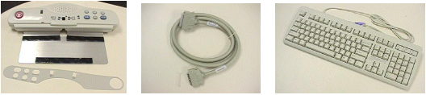
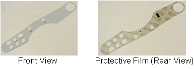
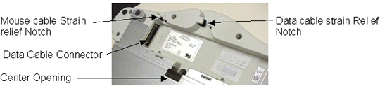
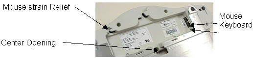
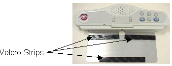

Operating Documentation
Direction 5133330-3, Rev# 14
Signa EXCITE HD 3.0T Service Methods
Module Version 2.0, Version Date 6/19/09
Operating Documentation |
| Required Persons | Preliminary Reqs | Procedure | Finalization |
|---|---|---|---|
| 1 |
In this section you will replace the old keyboard or install the new keyboard.
| Item | Qty | Effectivity | Part# | Manufacturer | |
|---|---|---|---|---|---|
| SCIM with English Template installed | 1 | - | 2289697-2 | - | |
| Data Cable | 1 | - | 2114561-46 or 2262158-9 | - | |
| Standard PS/2 Style Keyboard | 1 | - | 2275756 | - | |
| (Optional) International Languages Overlay package | 1 | - | 2289697-8 | - | |
Skip to New SCIM and Keyboard Install, "New SCIM and Keyboard Install", if you are replacing an existing SCIM.
Disconnect the data cable from the old keyboard only.
Turn the unit over and unplug and remove the mouse. Set the unit aside.
Proceed with New SCIM and Keyboard Install, New SCIM and Keyboard Install
Remove the SCIM, Data Cable, Keyboard and SCIM From the box. The data cable is identical in function to the current MR data cable and is not required in an MR installation. It has been provided for CT system application only, but can be used on Signa if you feel it is necessary to replace the data cable as well.
Illustration 1: SCIM KIT CONTENTS

All SCIM's come with the standard US English template installed. Skip to Step 3 if you are not using the alternate language templates.
| NOTE: | For the availability of other languages, see the parts Renewal Documents. |
(Non-English Only) You have the option to remove the English template or place the Language Template on top of the English version on the front of the SCIM. When you are satisfied it is in the proper position, rub your finger over it lightly, in between the buttons and around the Emergency Stop button to press in place.
Illustration 2: LANGUAGE LABEL

Expose the adhesive on the Language Template by peeling off its protective film. (Refer to Illustration 2)
Flip the SCIM unit up side down exposing the cable connections.
Illustration 3: DATA CABLE CONNECTOR

Attach the following cables:
Attach the old data cable (From WIM) to the new SCIM Scan-Control Intercom Module by plugging in the side of the cable that is marked " Keyboard". Route the cable through the strain relief notches in at the rear of the SCIM. (Refer to Illustration 3)
Attach the mouse to the jack labeled with a Mouse icon. Route the cable through the strain relief notches in at the rear of the SCIM. (Refer to Illustration 4)
Illustration 4: MOUSE AND KEYBOARD CONNECTIONS

Flip the SCIM over so it is right side up and guide the keyboard cable through the center opening. (Refer to Illustration 4 for location of center opening)
Once again, flip the SCIM unit up side down and attach the keyboard cable to the jack labeled with a Keyboard icon (Store excess cable in the base of the SCIM by tucking it in the depressed area). (Refer to Illustration 4)
Flip the SCIM over so it is right side up and place it in front of the monitor.
Illustration 5: SCIM

Pull the new keyboard forward, Flipping it on top of the SCIM up side down.
Remove the plastic strips from the velcro, exposing the adhesive surface. (Refer to Illustration 5)
Guide the cable back into the center notched opening until all the cable is under the SCIM base.
Place the keyboard tight against the SCIM, Center it as best as possible, and drop into place. The Velcro pads will now be sticking to the bottom of the keyboard.
| NOTE: | The adhesive on the velcro takes 24 hours to completely adhere to the bottom of the keyboard. Allow the adhesive to dry completely before removing keyboard from SCIM base. |
Illustration 6: SCIM AND KEYBOARD ASSEMBLED

Position the SCIM Assembly in front of the monitor and guide any excess data cable through the opening provided in the Workspace Desktop.
This completes the installation of the SCIM Assembly.
No finalization steps.